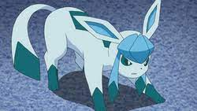
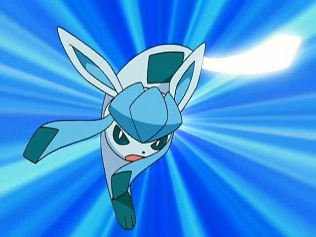

Glaceon es una de las 8 eeveeevoluciones que hay. Este en concreto adopta el tipo hielo y evoluciona a traves de piedra hielo o subiendo nivel cerca de una roca hielo en una cueva nevada. Este pokemon pertenece a la 4t Generacion en la region de Sinnoh.
Glacen suele entrar en enemistad con aquellos que invaden su su zona de caza, sobretodo con Absol ya que los dos comparten habitat y alimentacion.

La sangre de este Pokemon contiene un anticongelante que evita que su cuerpo se hiele debido a las bajas temperaturas. En estado salvaje suele vivir en la cima de las montañas nevadas donde puede pasar inviernos enteros sin apenas ingerir alimento, gracias a su gran defensa. Cuando está en zonas más calientes su cuerpo crea un aura que congela el suelo por donde pisa.